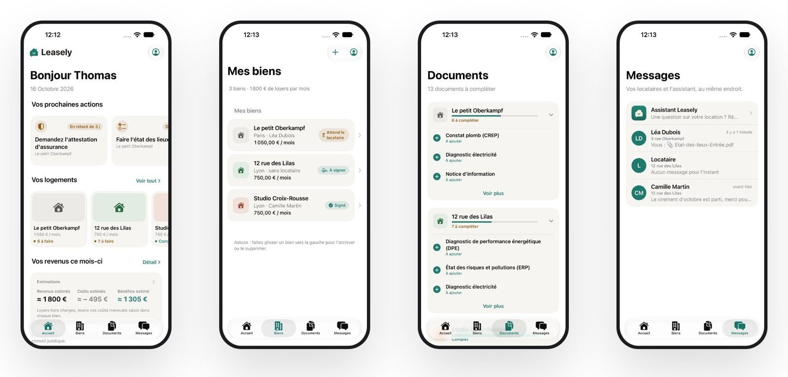
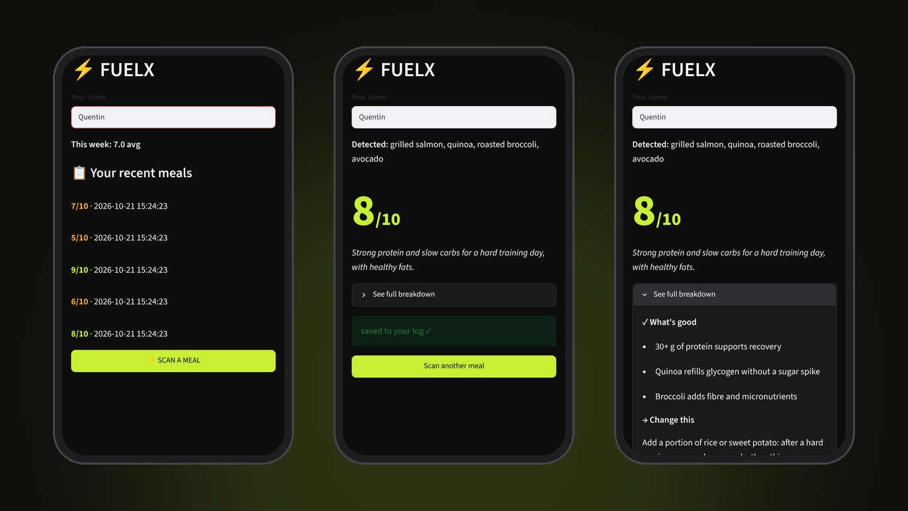
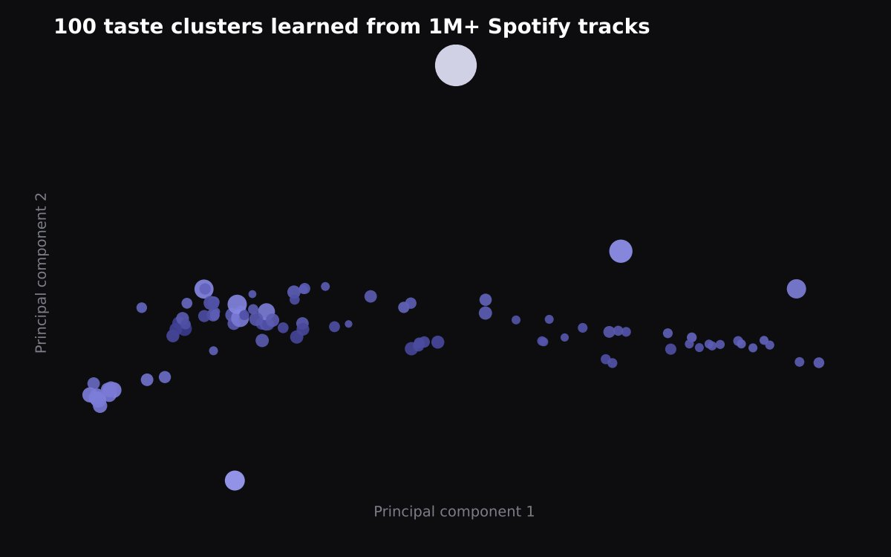

Hi, I'm Quentin.
I study data science and business in Paris.
I'm in my last year at CentraleSupélec and ESSEC. This is where you can see what I've worked on, what I've built and what I've studied.
who I am
From Hong Kong to Paris
I was born in Hong Kong and grew up between Hong Kong, Shanghai and Tokyo, then moved back to Hong Kong for high school. After that I studied economics at Bocconi in Milan, and did a data science bootcamp at Le Wagon in London because I wanted to write the code myself.
This summer I was a data scientist at Danone, working on computer vision. Before that I did data consulting at Artefact, worked at a startup in Mexico City and interned in private equity at Montagu.
Outside of school I played rugby for Hong Kong's national team. I speak French and English, good Spanish, some Chinese and a little Italian.
what I use
Tools I work with
where I've worked
Four internships, from Paris to Mexico City
-
Data Scientist intern at Danone
I built a tool on Databricks that blurs faces, licence plates and names in consumer photos so they can be used under GDPR. Then I used vision models to turn 10,000+ photos into data the insights team could work with.
-
Data Consultant intern at Artefact
I built a Dialogflow chatbot that answers 60 common questions for a large French distribution company, and a BigQuery catalogue of 2,000+ variables.
-
Portfolio Management intern at Clikalia
I moved the credit team's processes into HubSpot and wrote the manuals to train them. I also managed 200+ properties.
-
Deal team intern at Montagu
Market research, expert calls and due diligence on pharma and tech companies, mostly SaaS.
what I've built
Recent projects
Click a project to open its code on GitHub.

Leasely
An iPhone app that helps French landlords rent out a flat without an agency: scan the energy certificate, check what the law allows, generate the lease and sign it. We built it in two days, as a team of four.
- SwiftUI
- Apple Foundation Models
- Vision
- PDFKit

FuelX
Take a photo of your meal, say how hard you trained, and get a score out of 10 with one thing to change. It runs on a free, local vision model.
- Python
- LLaVA
- Streamlit
- SQLite
- Docker

HarmonIQ
Playlists made from the songs you already like. We grouped over a million Spotify tracks into 100 clusters and deployed it with FastAPI and Docker on GCP.
- PCA
- K-means
- FastAPI
- GCP
where I've studied
Hong Kong, Milan, London, Paris
MSc Data Science & Business Analytics at CentraleSupélec & ESSEC
A joint degree between an engineering school and a business school.
- Machine Learning
- Statistics
- Optimization
- Linear Algebra
- Databases
- C++
- Econometrics
Data Science & AI bootcamp at Le Wagon
Ten weeks of full-time coding. Our final project was HarmonIQ.
- Python
- Machine learning
- Deep learning
- Docker
- GCP
BSc Economics & International Management at Bocconi University
My thesis looked at what helps Bocconi graduates' startups succeed.
- Statistics
- Data analysis
- Corporate finance
- Macroeconomics
- Microeconomics
- Stata